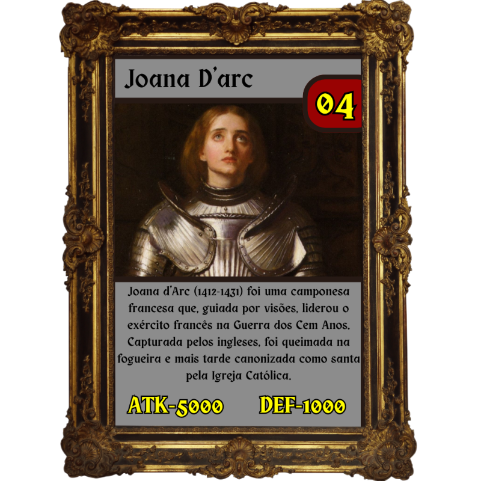

Um jogo de cartas desenvolvido por alunos do 1 ano de Desenvolvimento de Sistemas da ETEC Camargo Aranha.
Um jogo de batalha de cartas com personagens históricos de diferentes épocas, com suas diferentes características e habilidades. o jogo possui 100 cartas diferentes, cada uma com sua especialidade.
O objetivo desse jogo além da diversão é a educação, para conhecermos cada vez mais a história de nosso planeta. E como chegamos aos dias atuais da forma em que estamos.